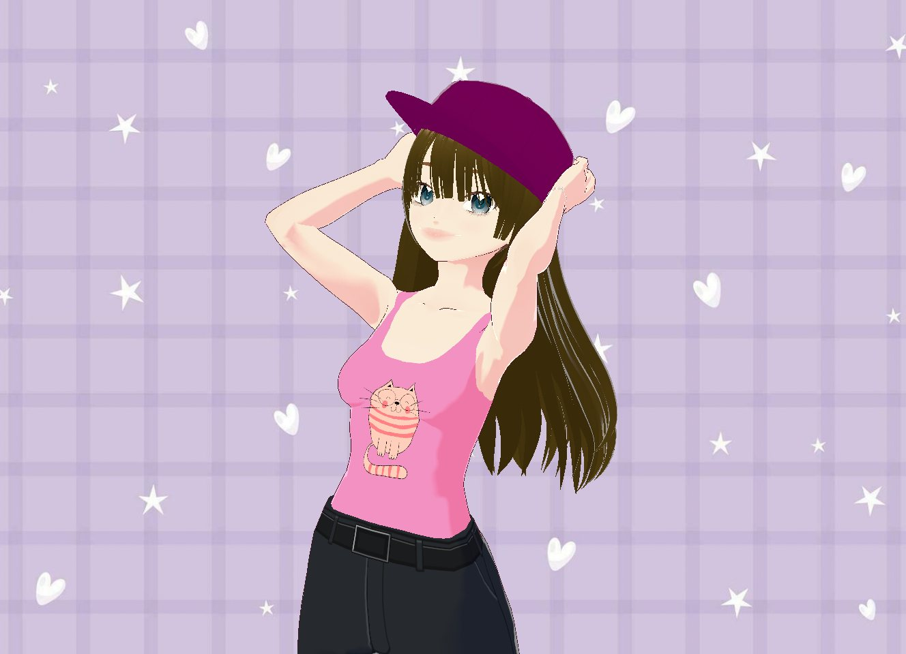
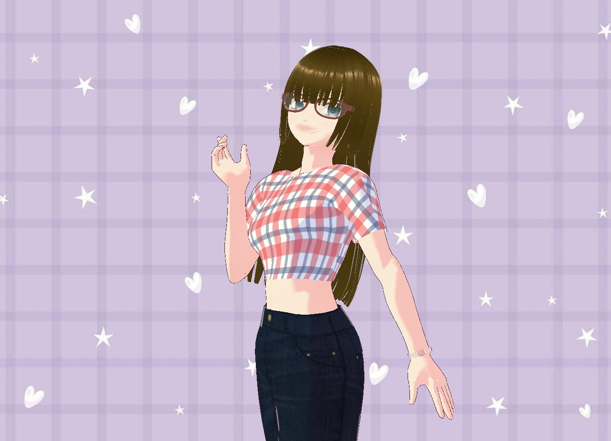
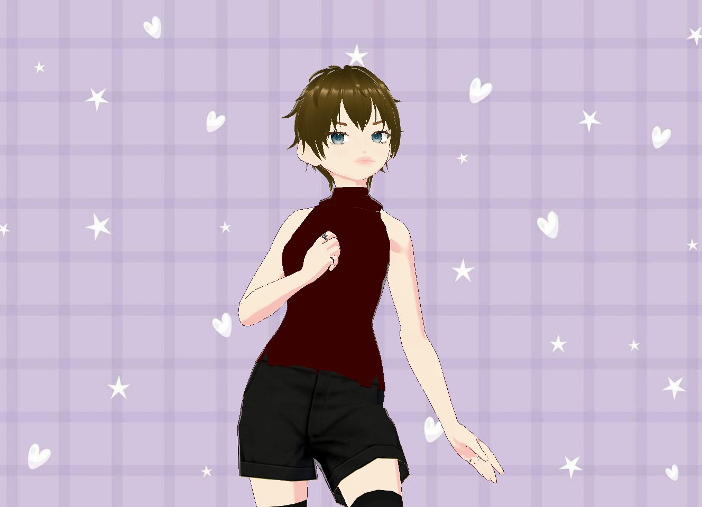
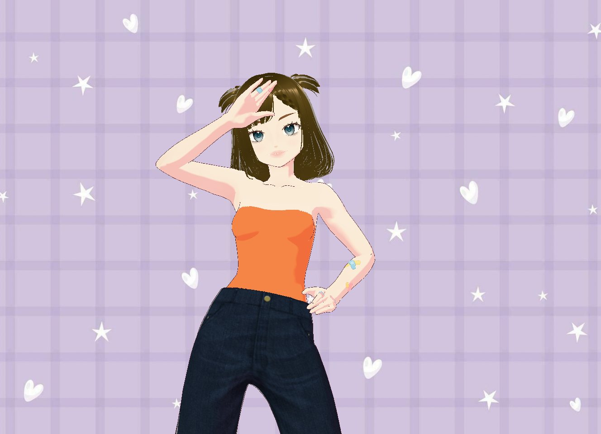
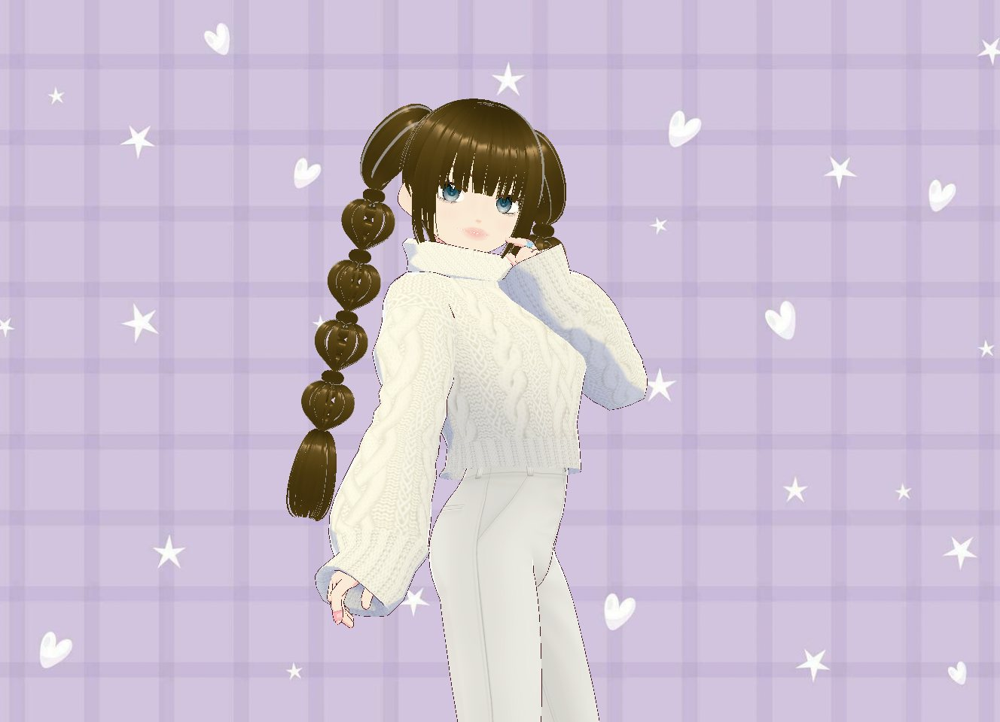
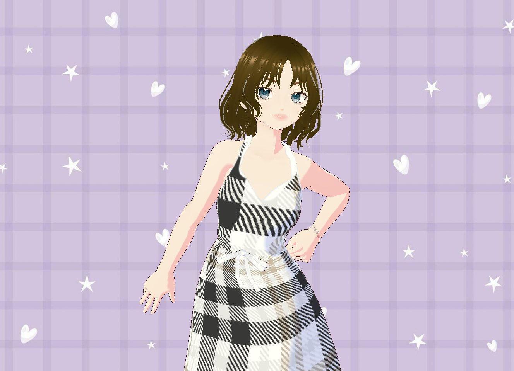
Tap to change the lookDolled Up
A nostalgic VR dress-up world, and a deep dive into an entirely new technical pipeline.
The Challenge
Dolled Up is an immersive VR experience built in Unity, centered on a nostalgic, dreamy closet inspired by the wardrobe energy of Hannah Montana. With no prior experience in 3D modeling, scripting, or VR interaction design, I learned all three in parallel on a compressed timeline.
The Solution
The closet is assembled in Unity from sourced and original assets: the clothing racks were found online, while I modeled the mirror, rugs, and room décor myself. Every interaction is scripted, written in Visual Studio with help from Gemini, and the world grew more detailed as my technical skills caught up with the vision.
Learning the Pipeline
Four overlapping stages, revisited continuously as my skills developed.
Model
The mirror, rugs, and décor are modeled in Blender, alongside clothing racks sourced online.
Build the world
Everything is assembled in Unity: a starry blue wall, lavender floor, lighting, and a mirror.
Dress the avatar
Avatars and outfits are designed in VRoid Studio, then swapped in as models when the player picks a dress. The character can also cycle through poses.
Make it VR
An XR rig with locomotion and grab interactions turns the scene into a space you can stand in.
No headset? No problem.
Unity’s XR Device Simulator let me test movement, turning, and grabbing with a keyboard and mouse, so building, testing, and fixing could happen before putting on a headset. The mannequin in this clip is the base for the playable character, which I programmed to walk and respond to controls, inspired by Dress to Impress.
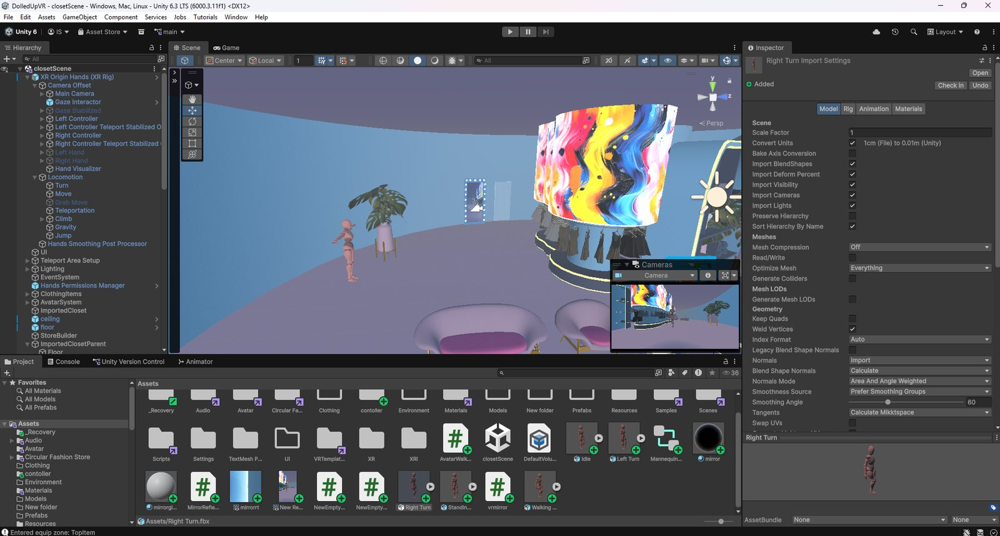
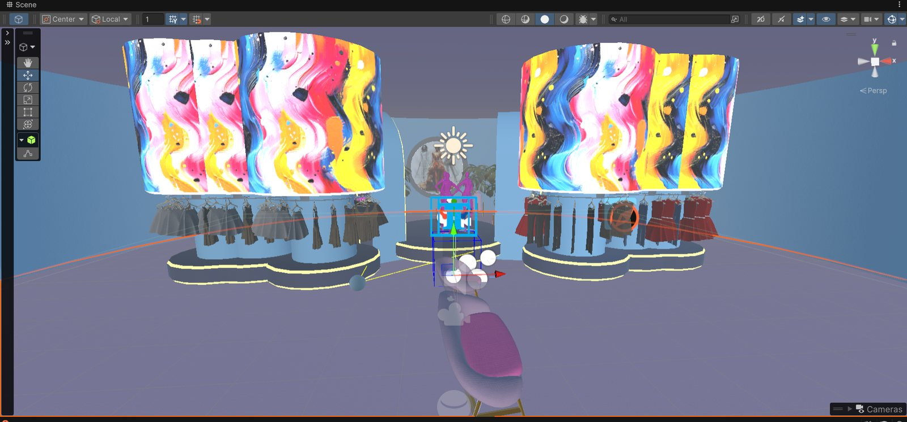
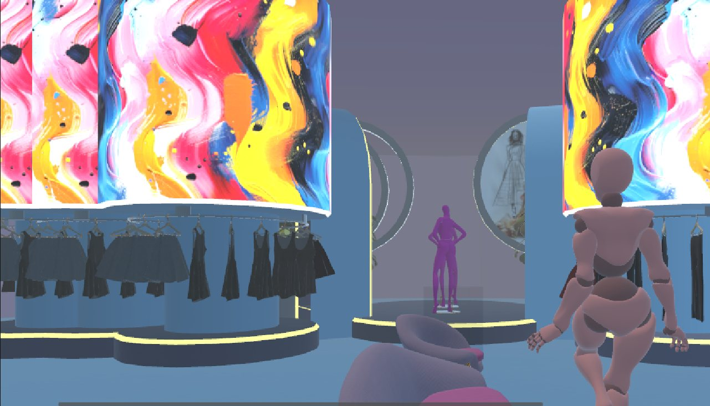
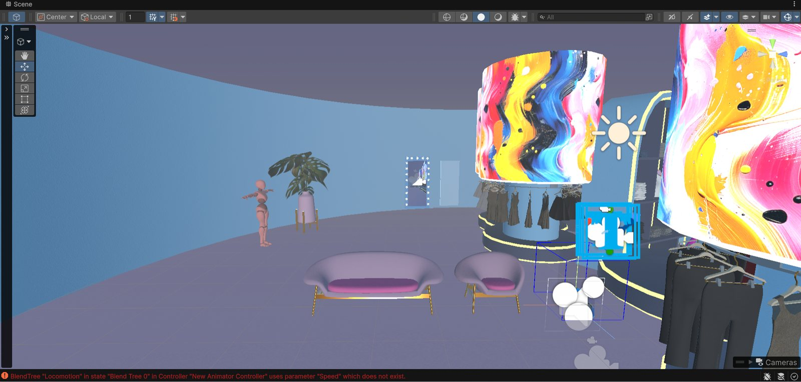
Walkthrough
A walkthrough of the closet as it stands in VR: the lounge, the racks, and the avatar trying on outfits.
The Wardrobe
Modeling every garment from scratch would have taken too long, so I designed the clothing in VRoid Studio instead. Each look is its own model that swaps in when the player selects a dress, and a set of poses lets the character strike a pose on command. A few of the looks so far.
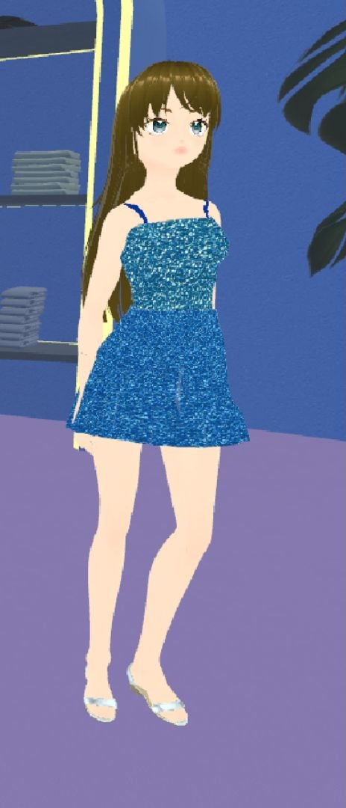
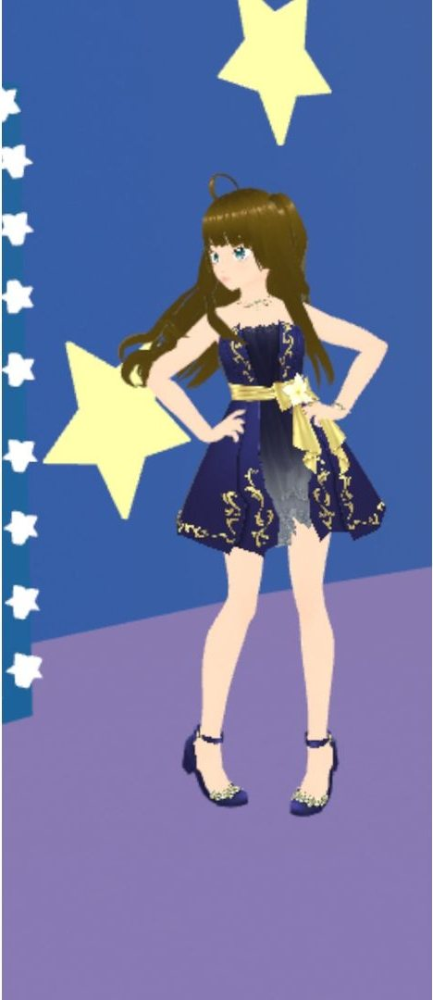
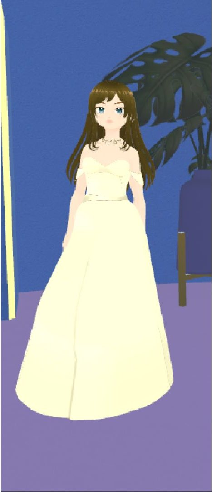
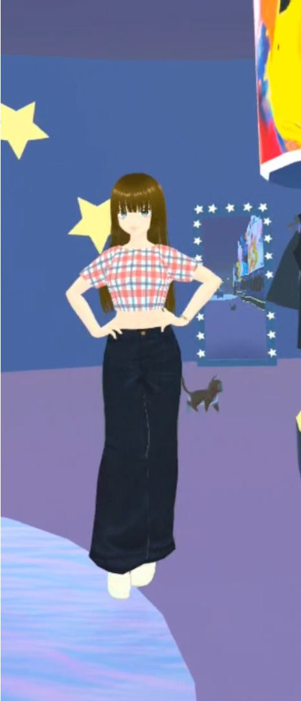
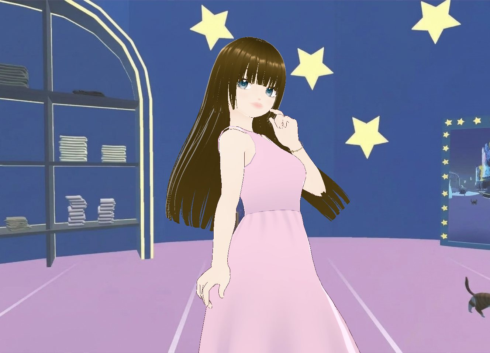
The Logo
Soft pastels and chunky 3D lettering, finished with stars and fabric swatches, to match the dress-up theme.
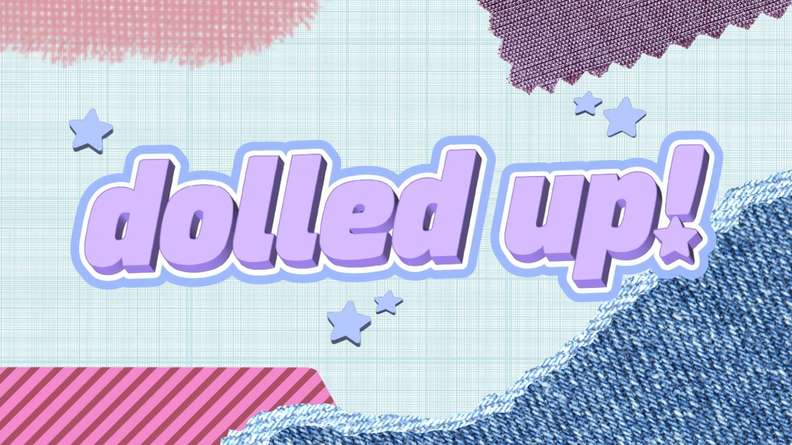
Try It On
As a companion to the VR build, I made a 2D version of the closet for nostalgia and to experiment with Claude Code. It draws on the dress-up games I grew up with: change your look at the racks, mirror, vanity, and jewelry cabinet, play the guitar and drums, sing along, and pet the cat.
The Outcome
Currently an in-progress VR prototype, and already a full end-to-end learning journey: from no Unity experience to a functional, explorable 3D environment. With the timeline so tight, a working space came before polish. Next steps include more interactions, music, and finishing touches.
Reflection
- Finding my own way to create a nostalgic atmosphere was the most enjoyable part of the project.
- Testing the game with a full class was equally valuable, and a lot of fun.
- Watching people play showed me how to improve the experience, how to reduce motion sickness in the headset, and what might confuse or disorient a player.
- It was a deeply fulfilling experience.